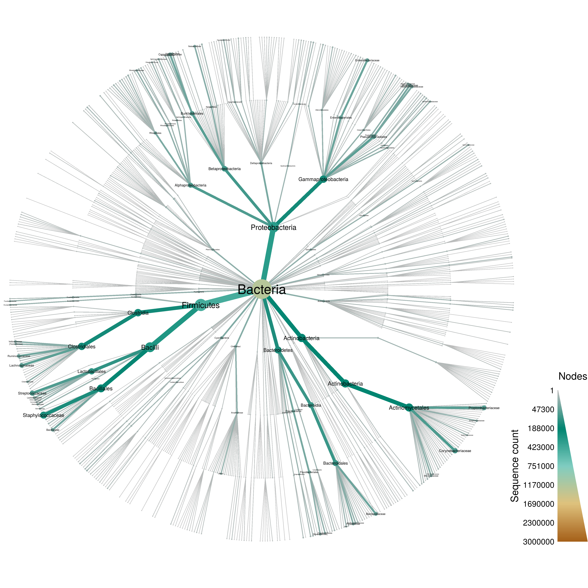
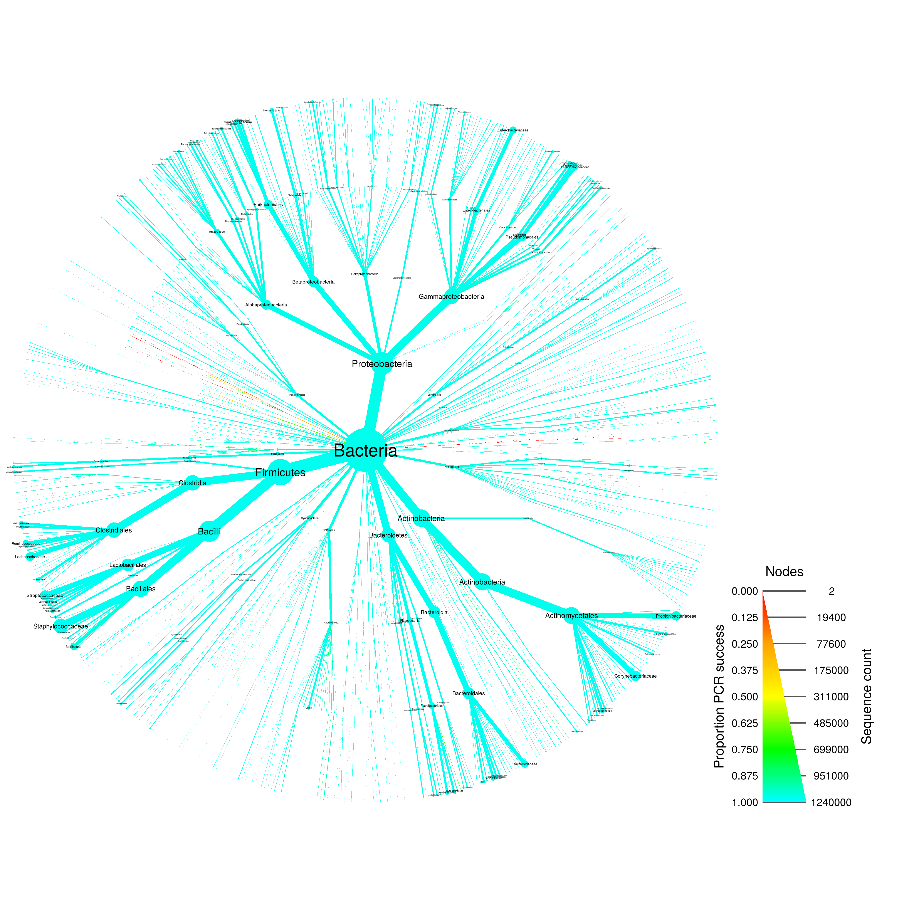
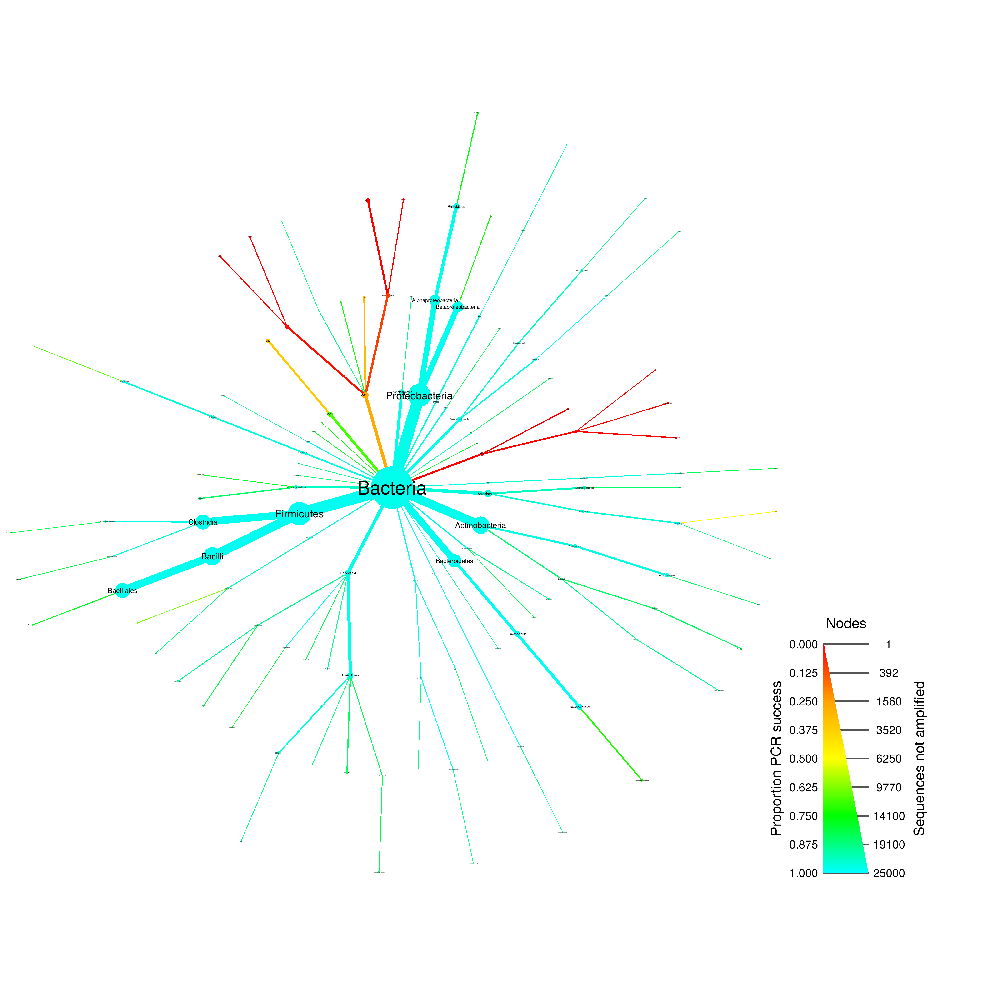

NOTE: This analysis requires at least 10Gb of RAM to run.
input_folder <- "raw_input"
output_folder <- "results"
output_format <- ".pdf"size_range <- c(0.0004, 0.015)
label_size_range <- c(0.001, 0.02)
all_size_interval <- c(1, 3000000)
pcr_size_interval <- c(1, 25000)
label_max <- 100
max_taxonomy_depth <- 4
min_seq_count <- NULL
just_bacteria <- TRUE
max_mismatch <- 10 # percentage mismatch tolerated in pcr
pcr_success_cutoff <- 0.90 # Used to subset for graphing
min_seq_length <- 1200 # Use to encourage full length sequences
forward_primer = c("515F" = "GTGYCAGCMGCCGCGGTAA")
reverse_primer = c("806R" = "GGACTACNVGGGTWTCTAAT")
pcr_success_color_scale = c("red", "orange", "yellow", "green", "cyan")The greengenes database stores sequences in one file and taxonomy information in another and the order of the two files differ making parseing more difficult than the other databases. Since taxonomy inforamtion is needed for creating the taxmap data structure, we will parse it first and add the sequence information on after.
gg_taxonomy_path <- file.path(input_folder, "gg_13_5_taxonomy.txt")
gg_taxonomy <- readLines(gg_taxonomy_path)
print(gg_taxonomy[1:5])## [1] "228054\tk__Bacteria; p__Cyanobacteria; c__Synechococcophycideae; o__Synechococcales; f__Synechococcaceae; g__Synechococcus; s__"
## [2] "844608\tk__Bacteria; p__Cyanobacteria; c__Synechococcophycideae; o__Synechococcales; f__Synechococcaceae; g__Synechococcus; s__"
## [3] "178780\tk__Bacteria; p__Cyanobacteria; c__Synechococcophycideae; o__Synechococcales; f__Synechococcaceae; g__Synechococcus; s__"
## [4] "198479\tk__Bacteria; p__Cyanobacteria; c__Synechococcophycideae; o__Synechococcales; f__Synechococcaceae; g__Synechococcus; s__"
## [5] "187280\tk__Bacteria; p__Cyanobacteria; c__Synechococcophycideae; o__Synechococcales; f__Synechococcaceae; g__Synechococcus; s__"Note that there are some ranks with no names. These will be removed after parsing the file since they provide no information and an uniform-length taxonomy is not needed.
library(metacoder)
# Parse taxonomy file
system.time(greengenes <- extract_taxonomy(input = gg_taxonomy, key = c(id = "obs_info", "class"), regex = "^([0-9]+)\t(.*)$", class_sep = "; ", class_regex = "^([a-z]{1})__(.*)$", class_key = c(rank = "taxon_info", "name")))## user system elapsed
## 412.917 0.512 414.177# Remove data for ranks with no information
greengenes <- filter_taxa(greengenes, name != "")
print(greengenes)## `taxmap` object with data for 3093 taxa and 1262986 observations:
##
## ----------------------------------------- taxa -----------------------------------------
## 1, 2, 4, 5, 6, 7, 14, 15 ... 7334, 7335, 7339, 7340, 7341, 7342, 7355, 7363, 7364
##
## -------------------------------------- taxon_data --------------------------------------
## # A tibble: 3,093 x 4
## taxon_ids supertaxon_ids rank name
## <chr> <chr> <chr> <chr>
## 1 1 <NA> k Archaea
## 2 2 <NA> k Bacteria
## 3 4 1 p Crenarchaeota
## 4 5 1 p Euryarchaeota
## 5 6 1 p Nanoarchaeota
## 6 7 1 p [Parvarchaeota]
## 7 14 4 c AAG
## # ... with 3,086 more rows
##
## --------------------------------------- obs_data ---------------------------------------
## # A tibble: 1,262,986 x 2
## obs_taxon_ids id
## <chr> <dbl>
## 1 2971 228054
## 2 2971 844608
## 3 2971 178780
## 4 2971 198479
## 5 2971 187280
## 6 2971 179180
## 7 2971 175058
## # ... with 1.263e+06 more rows
##
## ------------------------------------- taxon_funcs -------------------------------------
## n_obs, n_obs_1, n_supertaxa, n_subtaxa, n_subtaxa_1, hierarchiesNext we will parse the sequence file so we can add it to the obs_data table of the greengenes object.
gg_sequence_path <- file.path(input_folder, "gg_13_5.fasta")
substr(readLines(gg_sequence_path, n = 10), 1, 100)## [1] ">1111886"
## [2] "AACGAACGCTGGCGGCATGCCTAACACATGCAAGTCGAACGAGACCTTCGGGTCTAGTGGCGCACGGGTGCGTAACGCGTGGGAATCTGCCCTTGGGTAC"
## [3] ">1111885"
## [4] "AGAGTTTGATCCTGGCTCAGAATGAACGCTGGCGGCGTGCCTAACACATGCAAGTCGTACGAGAAATCCCGAGCTTGCTTGGGAAAGTAAAGTGGCGCAC"
## [5] ">1111883"
## [6] "GCTGGCGGCGTGCCTAACACATGTAAGTCGAACGGGACTGGGGGCAACTCCAGTTCAGTGGCAGACGGGTGCGTAACACGTGAGCAACTTGTCCGACGGC"
## [7] ">1111882"
## [8] "AGAGTTTGATCATGGCTCAGGATGAACGCTAGCGGCAGGCCTAACACATGCAAGTCGAGGGGTAGAGGCTTTCGGGCCTTGAGACCGGCGCACGGGTGCG"
## [9] ">1111879"
## [10] "CCTAATGCATGCAAGTCGAACGCAGCAGGCGTGCCTGGCTGCGTGGCGAACGGCTGACGAACACGTGGGTGACCTGCCCCGGAGTGGGGGATACCCCGTC"This can be easily parsed using seqinr:
gg_sequences <- seqinr::read.fasta(gg_sequence_path, as.string = TRUE)We will need to use the Greengenes ID to match up which sequence goes with which row since they are in different orders.
greengenes <- mutate_obs(greengenes, sequence = unlist(gg_sequences)[as.character(id)])This will make graphing a little more understandable by removing some taxa, but no sequence information will be removed.
if (! is.null(min_seq_count)) {
system.time(greengenes <- filter_taxa(greengenes, n_obs >= min_seq_count))
}
if (just_bacteria) {
system.time(greengenes <- filter_taxa(greengenes, name == "Bacteria", subtaxa = TRUE))
}## user system elapsed
## 0.453 0.000 0.454if (! is.null(max_taxonomy_depth)) {
system.time(greengenes <- filter_taxa(greengenes, n_supertaxa <= max_taxonomy_depth))
}## user system elapsed
## 0.395 0.000 0.396print(greengenes)## `taxmap` object with data for 1138 taxa and 1242330 observations:
##
## ----------------------------------------- taxa -----------------------------------------
## 2, 553, 644, 645, 646, 647, 554 ... 7334, 7335, 7329, 7355, 637, 7363, 7364
##
## -------------------------------------- taxon_data --------------------------------------
## # A tibble: 1,138 x 4
## taxon_ids supertaxon_ids rank name
## <chr> <chr> <chr> <chr>
## 1 2 <NA> k Bacteria
## 2 553 2 p AC1
## 3 644 553 c B04R032
## 4 645 553 c HDBW-WB69
## 5 646 553 c SHA-114
## 6 647 553 c TA06
## 7 554 2 p Acidobacteria
## # ... with 1,131 more rows
##
## --------------------------------------- obs_data ---------------------------------------
## # A tibble: 1,242,330 x 3
## obs_taxon_ids id
## <chr> <dbl>
## 1 2957 228054
## 2 2957 844608
## 3 2957 178780
## 4 2957 198479
## 5 2957 187280
## 6 2957 179180
## 7 2957 175058
## # ... with 1.242e+06 more rows, and 1 more variables: sequence <chr>
##
## ------------------------------------- taxon_funcs -------------------------------------
## n_obs, n_obs_1, n_supertaxa, n_subtaxa, n_subtaxa_1, hierarchiesThese are not bacterial and will bias the in silico PCR results.
system.time(greengenes <- filter_taxa(greengenes, name == "Chloroplast", subtaxa = TRUE, invert = TRUE))## user system elapsed
## 0.189 0.000 0.189print(greengenes)## `taxmap` object with data for 1121 taxa and 1242330 observations:
##
## ----------------------------------------- taxa -----------------------------------------
## 2, 553, 644, 645, 646, 647, 554 ... 7334, 7335, 7329, 7355, 637, 7363, 7364
##
## -------------------------------------- taxon_data --------------------------------------
## # A tibble: 1,121 x 4
## taxon_ids supertaxon_ids rank name
## <chr> <chr> <chr> <chr>
## 1 2 <NA> k Bacteria
## 2 553 2 p AC1
## 3 644 553 c B04R032
## 4 645 553 c HDBW-WB69
## 5 646 553 c SHA-114
## 6 647 553 c TA06
## 7 554 2 p Acidobacteria
## # ... with 1,114 more rows
##
## --------------------------------------- obs_data ---------------------------------------
## # A tibble: 1,242,330 x 3
## obs_taxon_ids id
## <chr> <dbl>
## 1 2957 228054
## 2 2957 844608
## 3 2957 178780
## 4 2957 198479
## 5 2957 187280
## 6 2957 179180
## 7 2957 175058
## # ... with 1.242e+06 more rows, and 1 more variables: sequence <chr>
##
## ------------------------------------- taxon_funcs -------------------------------------
## n_obs, n_obs_1, n_supertaxa, n_subtaxa, n_subtaxa_1, hierarchiesAlthough Greengenes is such a large database ( taxa) that graphing everything can be a bit overwhelming, it gives an intuitive feel for the complexity of the database:
system.time(greengenes_plot_all <- heat_tree(greengenes,
node_size = n_obs,
node_color = n_obs,
node_size_range = size_range * 2,
edge_size_range = size_range,
node_size_interval = all_size_interval,
edge_size_interval = all_size_interval,
node_color_interval = all_size_interval,
edge_color_interval = all_size_interval,
node_label = name,
node_label_max = label_max,
node_label_size_range = label_size_range,
node_color_axis_label = "Sequence count",
make_legend = TRUE,
output_file = file.path(output_folder, paste0("greengenes--all", output_format))))## user system elapsed
## 10.503 0.072 10.608print(greengenes_plot_all)
if (! is.null(min_seq_length)) {
system.time(greengenes <- filter_obs(greengenes, nchar(sequence) >= min_seq_length, unobserved = FALSE))
}## user system elapsed
## 4.747 0.240 4.995print(greengenes)## `taxmap` object with data for 1121 taxa and 1242309 observations:
##
## ----------------------------------------- taxa -----------------------------------------
## 2, 553, 644, 645, 646, 647, 554 ... 7334, 7335, 7329, 7355, 637, 7363, 7364
##
## -------------------------------------- taxon_data --------------------------------------
## # A tibble: 1,121 x 4
## taxon_ids supertaxon_ids rank name
## <chr> <chr> <chr> <chr>
## 1 2 <NA> k Bacteria
## 2 553 2 p AC1
## 3 644 553 c B04R032
## 4 645 553 c HDBW-WB69
## 5 646 553 c SHA-114
## 6 647 553 c TA06
## 7 554 2 p Acidobacteria
## # ... with 1,114 more rows
##
## --------------------------------------- obs_data ---------------------------------------
## # A tibble: 1,242,309 x 3
## obs_taxon_ids id
## <chr> <dbl>
## 1 2957 228054
## 2 2957 844608
## 3 2957 178780
## 4 2957 198479
## 5 2957 187280
## 6 2957 179180
## 7 2957 175058
## # ... with 1.242e+06 more rows, and 1 more variables: sequence <chr>
##
## ------------------------------------- taxon_funcs -------------------------------------
## n_obs, n_obs_1, n_supertaxa, n_subtaxa, n_subtaxa_1, hierarchiessystem.time(greengenes_pcr <- primersearch(greengenes,
forward = forward_primer,
reverse = reverse_primer,
mismatch = max_mismatch))## user system elapsed
## 127.360 3.028 135.588system.time(greengenes_plot_pcr_all <- heat_tree(greengenes_pcr,
node_size = n_obs,
node_label = name,
node_color = prop_amplified,
node_color_range = pcr_success_color_scale,
node_color_trans = "linear",
node_label_max = 150,
node_label_size_range = label_size_range,
edge_color_interval = c(0, 1),
node_color_interval = c(0, 1),
node_color_axis_label = "Proportion PCR success",
node_size_axis_label = "Sequence count",
output_file = file.path(output_folder, paste0("greengenes--pcr_all", output_format))))## user system elapsed
## 17.281 0.164 17.462print(greengenes_plot_pcr_all)
system.time(greengenes_plot_pcr_fail <- greengenes_pcr %>%
filter_taxa(prop_amplified < pcr_success_cutoff, supertaxa = TRUE) %>%
heat_tree(node_size = n_obs - count_amplified,
node_label = name,
node_color = prop_amplified,
node_size_range = size_range * 2,
edge_size_range = size_range,
node_size_interval = pcr_size_interval,
edge_size_interval = pcr_size_interval,
node_color_range = pcr_success_color_scale,
node_color_trans = "linear",
node_color_interval = c(0, 1),
edge_color_interval = c(0, 1),
node_label_size_range = label_size_range,
node_label_max = 1000,
node_color_axis_label = "Proportion PCR success",
node_size_axis_label = "Sequences not amplified",
make_legend = TRUE,
output_file = file.path(output_folder, paste0("greengenes--pcr_fail", output_format))))## user system elapsed
## 10.242 0.028 10.287print(greengenes_plot_pcr_fail)
Some results from this file will be combined with other to make a composite figure. Below, the needed objects are saved so that they can be loaded by another Rmd file.
save(file = file.path(output_folder, "greengenes_data.RData"),
greengenes_plot_all, greengenes_plot_pcr_fail)